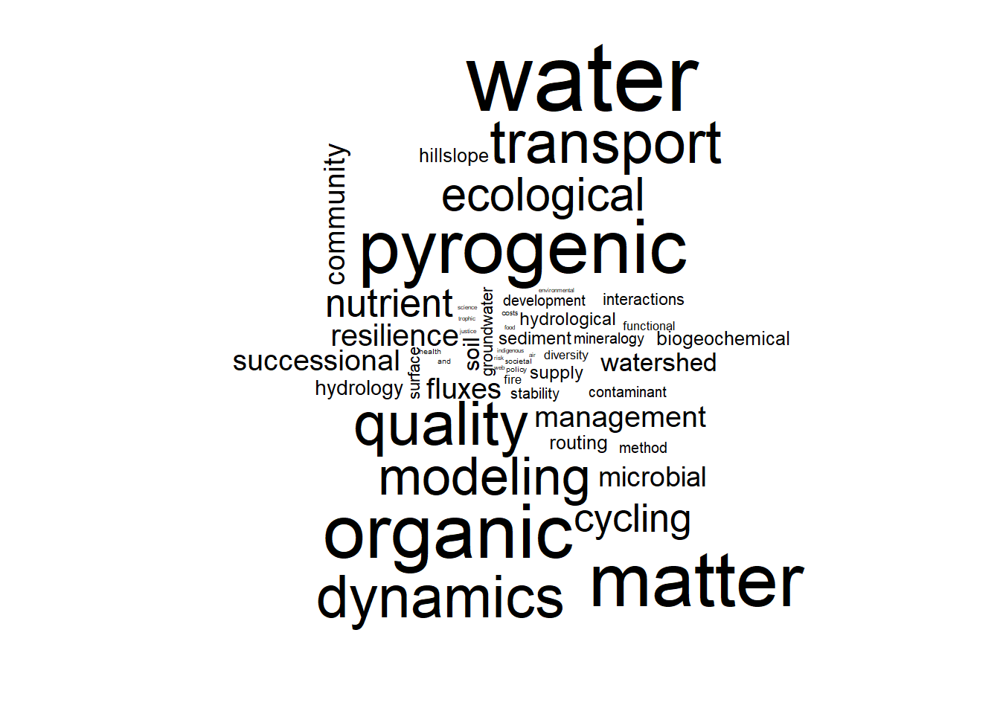
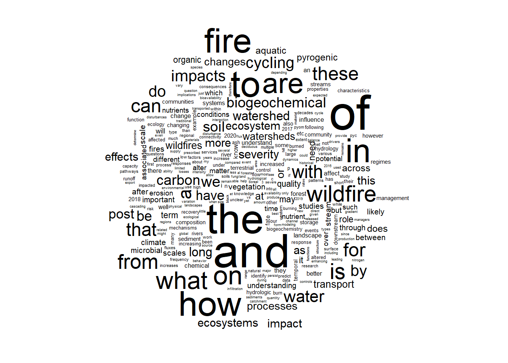
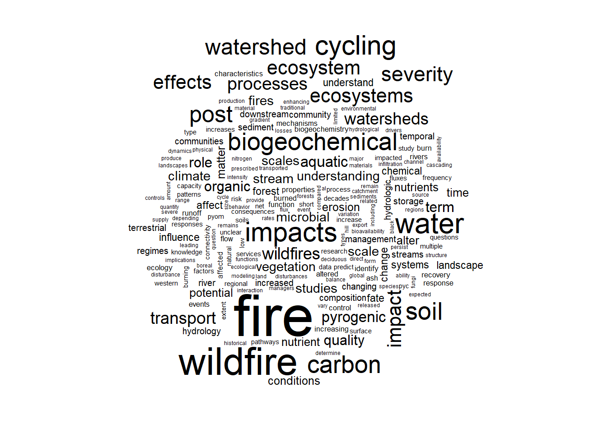
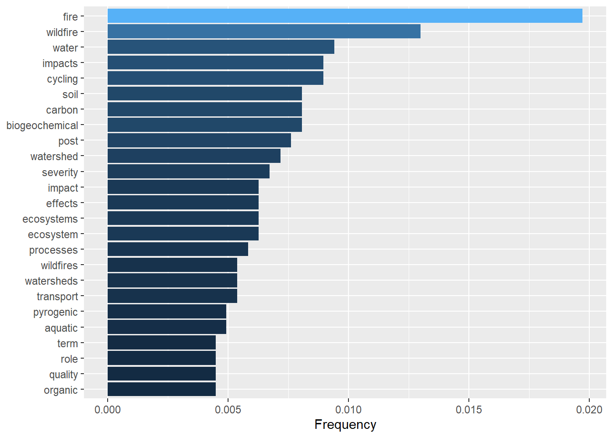
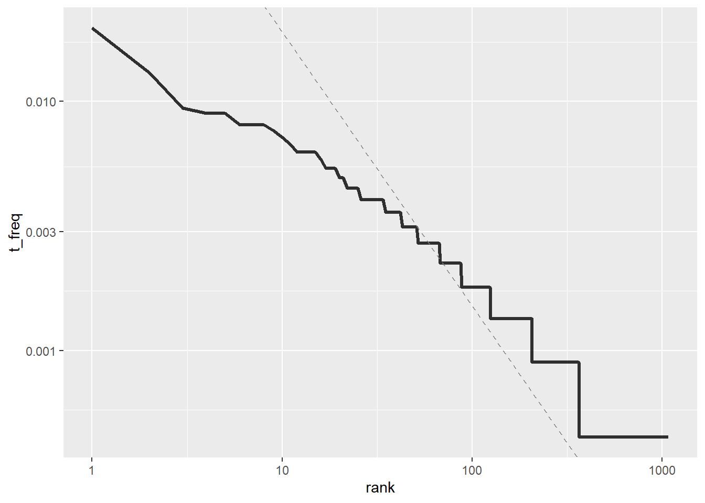
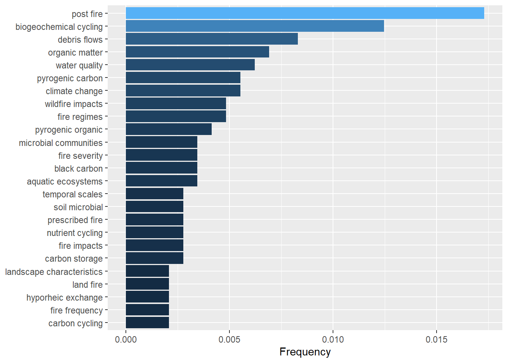
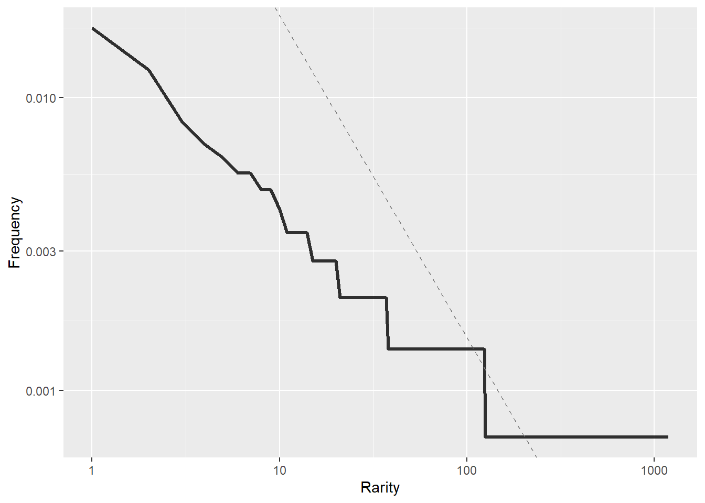
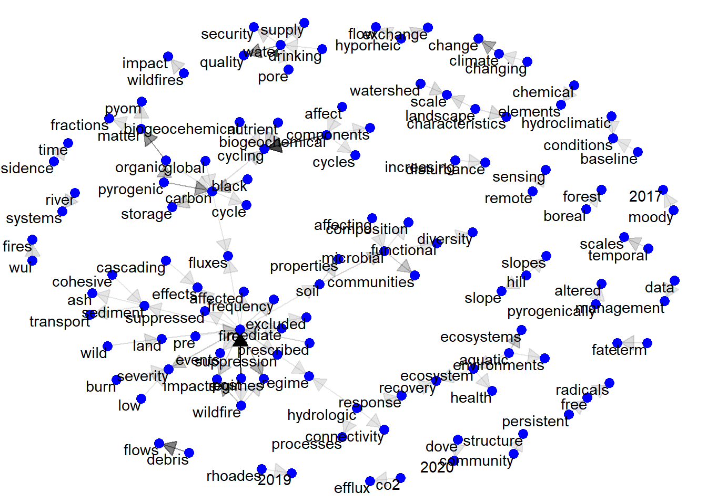

Exploratory Text-Data Analysis
A Text analysis with Tidytext
This is an exploratory data analysis (flesh out later)
Loading the dataset & Tokenization
Our dataset
Our initial dataset contains answers from 67 participants to the following questions:
Research Areas: Which research area do you identify with? Choose all that apply
Pressing questions: Articulate what are 2 of the most pressing questions that need to be addressed to further our understanding of wildfire impacts on biogeochemical cycling in watersheds.
The datafile is organized in long format with three columns for the variables: Unique Identifier “ID”, “question” and “answers”. The original excel file was saved as CSV-UTF-8 for text analysis purposes.
| ID | Question type | Answers | |
|---|---|---|---|
| 1 | IA0001 | pressing-q | better understanding of the temporal scales of the different impacts as well as their potential interactions movement of materials ash, pyrogenic carbon, eroded soil between compartments from hillslopes to the hydrological network as well as physical and biological alterations of those during the transport |
| 2 | IA0002 | pressing-q | How are flow pathways affected by wildfires change of hydrological processes beyond vegetation removal? How long do changes in hydrology and biogeochemistry last? including importance of forest disturbance history |
| 3 | IA0003 | pressing-q | How important are deeper groundwater flowpaths for prolonging elevated nutrient yields in burned watersheds? The vast majority of post-wildfire studies on biogeochemical cycling have focused on surface or shallow flowpaths, yet post-fire geochemical tracers indicate elevated contributions from deeper bedrock flowpaths during some hydroclimatic conditions Murphy 2018. What is the role of hyporheic flow through wildfire-deposited or reworked sediments in stream beds for enhancing or buffering elevated constituent loading in streams? Wildfires alter streambed sediments through aggradation, incision, and stabilization phases controlled by links between hydroclimatic conditions and geomorphic processes Moody, 2017. Despite the ubiquity of changes in streambed sediments, we know little about how these streambed changes and associated alteration of hyporheic flow changes biogeochemical cycling. |
| 68 | IA0001 | research-a | Nutrient Cycling, Pyrogenic Organic Matter, Soil Stability, Quality, Mineralogy, Pyrogenic Organic Matter Transport, Fluxes, Water Quality, Watershed Management |
| 69 | IA0002 | research-a | Water Routing, Hillslope Hydrology, Surface Water – Groundwater Interactions, Hydrological Modeling |
| 70 | IA0003 | research-a | Water Routing, Hillslope Hydrology, Hydrological Modeling |
Tokenization
Tokenization is the process of separating every single word contained in an answer and creating a new data file that will contain as many rows as total words in the original dataset.
For this part we are going to separate the answers for the first two questions in two data sets. This is because the research area answers easier to analyze than those for the pressing questions. The research area answers are separated by commas and contain no filler words (due to the format used for the original question in the google form).
#For research area questions
ra_dat <- t_df%>%filter(question=="research-a")
#For pressing questions
pq_dat <- t_df%>%filter(question=="pressing-q")Let’s use wordclouds to visualize the ouput of tokenizing the research area dataset. I had to adjust the size of the words using the scale parameter (maximum size = 4 by default). Otherwise certain long words would not be fit into the plot (see stackoverflow answer)

Pressing questions answers requires an extra step. We need to remove “filler words” a.k.a. stop words (e.g., a, the, this…). We also need to deal with plurals and singulars of the same word.
| Stop word | Lexicon |
|---|---|
| a | SMART |
| a's | SMART |
| able | SMART |
| about | SMART |
| above | SMART |
| according | SMART |
| you | onix |
| young | onix |
| younger | onix |
| youngest | onix |
| your | onix |
| yours | onix |
More info about lexicons and text categorization can be found here
Let’s use wordclouds again to see the difference between the raw answers and “cleaned” answers for the pressing questions topic.
pq_tokens <- pq_dat %>%
unnest_tokens(output = word, input = answers)%>%
anti_join(stop_words, by = "word")%>%
filter(str_detect(word,"[:alpha:]"))%>%
distinct() %>%
count(word, sort = FALSE) %>%
mutate(length = nchar(word))
head(pq_tokens) word n length
1 2017a 1 5
2 21st 1 4
3 ability 3 7
4 abney 1 5
5 absence 1 7
6 acccurately 1 11Dealing with Plurals and singulars
From Stack overflow
“The best way to do this is to use a tool to tag your plural nouns, and then to convert these to singular. Unlike the stemmer solution, this will not stem words such as stemming to stem, or quickly to quick, etc.I recommend using the spacyr package for this, which integrates nicely with quanteda.”
Yet, there are a few steps required for this to work, as detailed in Running Python Chunks in RStudio and rmarkdown. After that you could also watch this YouTube Tutorial.
Raw Data

gls <- as.data.frame(pq_dat %>%
unnest_tokens(output = word, input = answers)%>%
anti_join(stop_words, by = "word")%>%
filter(str_detect(word,"[:alpha:]"))%>%
distinct() %>%
count(word, sort = TRUE))
head(gls) word n
1 fire 44
2 wildfire 29
3 water 21
4 cycling 20
5 impacts 20
6 biogeochemical 18“Clean” Data

We used the function anti_join to remove stop words. We also want to remove numbers (like year of publication). To do so we use the combination of filter and str_detec to preserve only alphabetic characters "[:alpha:]". Finally, to make sure we are not double counting words, we use the function distinct.
Glossary
Besides identifying the words that are more frequently used in the answers, we could use our dataset to create a consistent glossary.
| Word | Frequency | |
|---|---|---|
| 1 | fire | 44 |
| 2 | wildfire | 29 |
| 3 | water | 21 |
| 4 | cycling | 20 |
| 5 | impacts | 20 |
| 6 | biogeochemical | 18 |
| 1073 | world | 1 |
| 1074 | wu | 1 |
| 1075 | wuis | 1 |
| 1076 | xanes | 1 |
| 1077 | xas | 1 |
| 1078 | yosemite | 1 |
To do so, we could use a frequency filter; including words above a frequency threshold (e.g. 2)
gls_fw <- filter(gls, n > 2)
gls_fwp <- rbind(head(gls_fw),tail(gls_fw))
colnames(gls_fwp) <- c("Word", "Frequency")
knitr::kable(gls_fwp,format="html") %>%
html_table_width(c(200,200))| Word | Frequency | |
|---|---|---|
| 1 | fire | 44 |
| 2 | wildfire | 29 |
| 3 | water | 21 |
| 4 | cycling | 20 |
| 5 | impacts | 20 |
| 6 | biogeochemical | 18 |
| 201 | supply | 3 |
| 202 | traditional | 3 |
| 203 | transported | 3 |
| 204 | types | 3 |
| 205 | variation | 3 |
| 206 | vary | 3 |
We still have a long list of words that are not necessarily associated to wildfires. We can look into different associations to get collections of keywords. Bit before that, we will start with term frequencies
Term Frequencies


Words with low frequency make a large contribution to the text.
We observe deviations from the Zipf’s law both at the higher rank words (rare)and the lower rank words (more common). On the one hand, we have more words than expected at higher ranks, and less words than expected at lower ranks. This is perhaps the effect of abundant technical terms in the corpus analyzed here.
Analyzing word’s frequencies using Zipf’s law seems to have some drawbacks, see: Zipf’s law holds for phrases, not words. However the unnest_tokens function can also be applied to sentences.
| ID | question | sentences |
|---|---|---|
| IA0001 | pressing-q | better understanding of the temporal scales of the different impacts as well as their potential interactions movement of materials ash, pyrogenic carbon, eroded soil between compartments from hillslopes to the hydrological network as well as physical and biological alterations of those during the transport |
| IA0002 | pressing-q | how are flow pathways affected by wildfires change of hydrological processes beyond vegetation removal? |
| IA0002 | pressing-q | how long do changes in hydrology and biogeochemistry last? |
| IA0002 | pressing-q | including importance of forest disturbance history |
| IA0003 | pressing-q | how important are deeper groundwater flowpaths for prolonging elevated nutrient yields in burned watersheds? |
| IA0003 | pressing-q | the vast majority of post-wildfire studies on biogeochemical cycling have focused on surface or shallow flowpaths, yet post-fire geochemical tracers indicate elevated contributions from deeper bedrock flowpaths during some hydroclimatic conditions murphy 2018. |
The bind_tf_idf function
A function from the tidytext package that aims to find the most common words in a text by decreasing the weight of the most common terms and increasing it for the less common (i.e. meeting in the middle scenario)
“The logic of tf-idf is that the words containing the greatest information about a particular document are the words that appear many times in that document, but in relatively few others.”
It is meant to be for document intercomparison. Here we could use it for questions, abstracts, or even journal articles.
Text mining with multiple pdf’s
Correlation analysis
Relationships between words: n-grams
pq_digrams <- pq_dat %>%
filter(str_detect(answers,"[:alpha:]"))%>%
unnest_tokens(bigram, answers, token = "ngrams", n = 2) %>%
separate(bigram,c("word1", "word2"), sep = " ") %>%
filter(!word1 %in% stop_words$word) %>%
filter(!word2 %in% stop_words$word) %>%
count(word1, word2, sort = TRUE) %>%
mutate(rank = row_number(),
total=sum(n),
t_freq = n/total)
head(pq_digrams) word1 word2 n rank total t_freq
1 post fire 25 1 1444 0.017313019
2 biogeochemical cycling 18 2 1444 0.012465374
3 debris flows 12 3 1444 0.008310249
4 organic matter 10 4 1444 0.006925208
5 water quality 9 5 1444 0.006232687
6 climate change 8 6 1444 0.005540166#Distribution of frequency values
pq_digrams %>% filter(rank < 26) %>%
unite(bigram, word1, word2, sep = " ") %>%
ggplot(aes(t_freq, fct_reorder(bigram, t_freq), fill = t_freq)) +
geom_col(show.legend = FALSE) +
labs(x = "Frequency", y = NULL)
#Zipf's law for survey answers
pq_digrams %>%
ggplot(aes(rank,t_freq)) +
geom_line(size = 1.1, alpha = 0.8, show.legend = FALSE) +
geom_abline(intercept = -0.62, slope = -1.1,
color = "gray50", linetype = 2) +
scale_x_log10() +
scale_y_log10()+
xlab("Rarity")+
ylab("Frequency")
Visualizing a network of bigrams with ggraph
bigram_graph <- pq_digrams %>%
filter(rank < 101) %>%
graph_from_data_frame()
bigram_graphIGRAPH 9d3f6ff DN-- 123 100 --
+ attr: name (v/c), n (e/n), rank (e/n), total (e/n), t_freq (e/n)
+ edges from 9d3f6ff (vertex names):
[1] post ->fire biogeochemical->cycling
[3] debris ->flows organic ->matter
[5] water ->quality climate ->change
[7] pyrogenic ->carbon fire ->regimes
[9] wildfire ->impacts pyrogenic ->organic
[11] aquatic ->ecosystems black ->carbon
[13] fire ->severity microbial ->communities
[15] carbon ->storage fire ->impacts
+ ... omitted several edgesset.seed(2017)
a <- grid::arrow(type = "closed", length = unit(.15, "inches"))
ggraph(bigram_graph, layout = "fr") +
# geom_edge_link(show.legend = FALSE,
# arrow = a, end_cap = circle(.07, 'inches')) +
geom_edge_link(aes(edge_alpha = n), show.legend = FALSE,
arrow = a, end_cap = circle(.035, 'inches')) +
geom_node_point(color = "blue", size = 3) +
geom_node_text(aes(label = name), vjust = 1, hjust = 1)+
theme_void()
Editing network graphs: GitHub-Issue